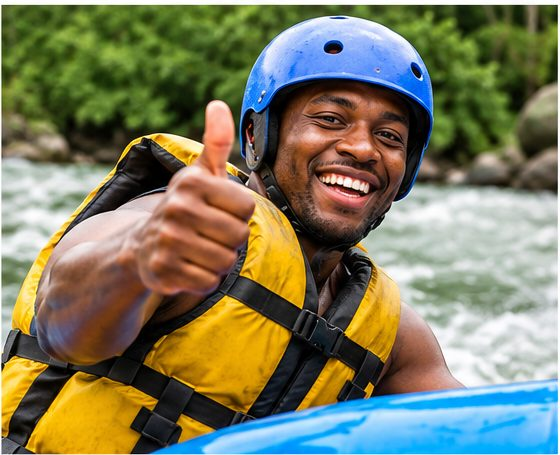

At Exciting Expeditions, our white water rafting trips are designed to provide thrill-seekers with an unforgettable experience on the water. Our expert guides ensure safety while you navigate through stunning landscapes and challenging rapids. Join us for an adventure of a lifetime!